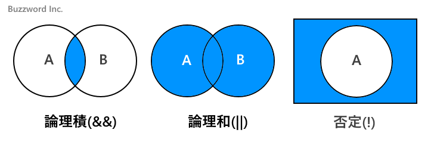
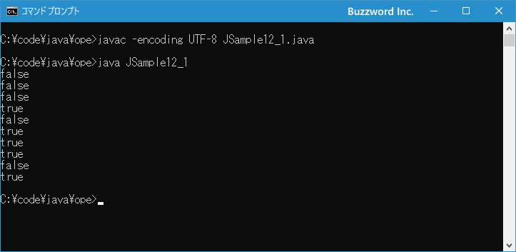

論理演算子
関係演算子を使うと 2 つの値の大小や等しいかどうかを評価することができますが、論理演算子と組み合わせることで、 A 且つ B や A または B といった複数の条件式を組み合わせたより複雑な条件式を定義することができます。ここでは論理演算子の使い方、および論理演算における短絡評価の注意点について解説します。
論理演算子の使い方
論理演算子は複数の条件式(または boolean 型の値)を組み合わせた式を評価して true または false を返します。対象となる条件式は 1 つ、または 2 つで次のような論理演算子が用意されています。
| 演算子 | 使用例 | 意味 |
|---|---|---|
| && | A && B | 論理積、AとBが共にtrueならtrue |
| || | A || B | 論理和、AかBの少なくとも1つがtrueならtrue |
| ! | !A | 否定、Aがtrueならfalse、Aがfalseならtrue |
条件式には関係演算子やその他の演算子で結果として true または false の boolean 型の値を返す式を記述します(関係演算子については「関係演算子と等価演算子」を参照されてください)。直接 boolean 型の値を記述することもできます。
論理積、論理和、否定をベン図で表すと次のような形になります。

もし関係演算子を使った式が A && B だった場合、 A の条件式が true 且つ B の条件式が true だった場合は式全体の評価が true となります。そうでなかった場合は false となります。
左辺の条件式 && 右辺の条件式
論理演算子がよく使用されるのが if 文などの条件分岐や while 文などの繰り返しです。例えば次のように if 文の条件式の中で論理演算子が使用されます。
int math = 84;
int science = 78;
if (math > 80 && science > 80){
System.out.println("合格です");
}
それではそれぞれの論理演算子の使い方について見ていきます。
論理積
&& は論理積とも呼ばれ、演算子の左辺の式および右辺の式が共に true の場合だけ全体の式が true となります。
左辺 && 右辺
左辺と右辺の値による全体の値の一覧は次の通りです。
| 左辺 | 右辺 | 全体 |
|---|---|---|
| true | true | true |
| true | false | false |
| false | true | false |
| false | false | false |
次のサンプルをみてください。
int a = 7; int b = 4; System.out.println(a < 0 && b > 5); // false System.out.println(a < 5 && b > 3); // false System.out.println(a < 9 && b > 7); // false System.out.println(a < 9 && b > 3); // true
演算子の左辺の式および右辺の式がともに true の場合だけ全体の式が true となっています。
左辺の式と右辺の式が評価されて最後に論理演算子を使って式全体が評価されるのは、論理演算子で使用する && と || の演算子の優先順位が関係演算子よりも低いためです。なお && と || では優先順位が同じではなく && の方が高い点は注意してください。演算子の優先順位については「演算子の優先順位」を参照されてください。
論理和
|| は論理和とも呼ばれ、演算子の左辺の式および右辺の式の少なくとも一つが true だった場合、全体の式が true となります。
左辺 || 右辺
左辺と右辺の値による全体の値の一覧は次の通りです。
| 左辺 | 右辺 | 全体 |
|---|---|---|
| true | true | true |
| true | false | true |
| false | true | true |
| false | false | false |
次のサンプルをみてください。
int a = 7; int b = 4; System.out.println(a < 0 || b > 5); // false System.out.println(a < 5 || b > 3); // true System.out.println(a < 9 || b > 7); // true System.out.println(a < 9 || b > 3); // true
演算子の左辺の式および右辺の式の少なくとも一つが true の場合は全体の式が true となっています。
論理否定
! は論理否定とも呼ばれ、演算子の左辺の式が true の場合は false 、右辺の式が false の場合は true となります。
!右辺
右辺の値による全体の値の一覧は次の通りです。
| 右辺 | 全体 |
|---|---|
| true | false |
| false | true |
次のサンプルをみてください。
int a = 7; System.out.println(!(a > 0)); // false System.out.println(!(a > 9)); // true
演算子の右辺の式が true の場合は全体の式が false となり、右辺の式が false の場合は全体の式が true となっています。
なお ! 演算子は優先順位が関係演算子よりも高いので、必要に応じて右辺の式をカッコ()で囲んで下さい。
それでは簡単なサンプルプログラムを作って試してみます。テキストエディタで次のように記述したあと、 JSample12-1.java という名前で保存します。
class JSample12_1{
public static void main(String[] args){
int a = 7;
int b = 4;
System.out.println(a < 0 && b > 5);
System.out.println(a < 5 && b > 3);
System.out.println(a < 9 && b > 7);
System.out.println(a < 9 && b > 3);
System.out.println(a < 0 || b > 5);
System.out.println(a < 5 || b > 3);
System.out.println(a < 9 || b > 7);
System.out.println(a < 9 || b >> 3);
System.out.println(!(a > 0));
System.out.println(!(a > 9));
}
}
コンパイルを行います。
javac -encoding UTF-8 JSample12_1.java
その後で、次のように実行してください。
java JSample12_1

ここまでサンプルとして記載してきたものを実際に実行してみました。
短絡評価について
論理演算子を使用した式では最初に左側の式を評価しますが、場合によっては左側の式の評価だけが行われて右側の式の評価が行われない場合があります。
次のサンプルをみてください。 if 文の条件式の中で変数の num に格納されている値が 5 よりも大きく且つ 10 よりも小さいかどうかを論理積を使って記述しています。
int num = 3;
if (num > 5 && num < 10){
// ...
}
最初に && の左辺の式を評価しますが今回は false となります。 && 演算子は左辺の式と右辺の式がともに true の場合だけ全体の式が true となるため、左側の式が false となった時点で全体の式は false となることが確定します。
Java の場合、左側の式を評価した時点で全体の式の評価が確定した場合、右側の式は評価しません。(このような方式を短絡評価と呼びます)。
もう一つサンプルをみてください。 if 文の条件式の中で変数の num に格納されている値が 10 よりも小さいかまたは 5 よりも大きいかどうかを論理和を使って記述しています。
int num = 3;
if (num < 10 || num > 5){
// ...
}
最初に || の左辺の式を評価しますが今回は true となります。 || 演算子は左辺の式と右辺の式のどちらか一つでも true の場合は全体の式が true となるため、左側の式が true となった時点で全体の式は true となることが確定します。この場合も右側の式は評価が行われません。
無駄な評価を行わないことでパフォーマンスがよくなるメリットはありますが注意が必要な点もあります。次のサンプルをみてください。
int num1 = 30;
int num2 = 25;
if (num1 > 10 || ++num2 < 40){
// ...
}
if 文の条件式の中で、左側の式を評価した時点で結果が確定した場合、右側の式は評価されません。その為、 ++num2 が実行されることはありません。逆に左側の式を評価した時点で確定しなかった場合は右側の式を評価したあとで ++num2 が実行されます。もし ++num2 がいずれにしても実行されるつもりでコードを記述した場合には意図しない結果となります。
逆にこの性質を利用してコードをシンプルに記述できるケースもあります。実際にどのように処理が行われるのかを理解された上で論理演算子を使用されてみてください。
なお同じ論理演算を行う & 演算子や | 演算子では短絡評価は行われません。いずれの場合も左辺と右辺の評価が行われます。
-- --
論理演算子の使い方、および論理演算における短絡評価の注意点について解説しました。
( Written by Tatsuo Ikura )

著者 / TATSUO IKURA
初心者～中級者の方を対象としたプログラミング方法や開発環境の構築の解説を行うサイトの運営を行っています。